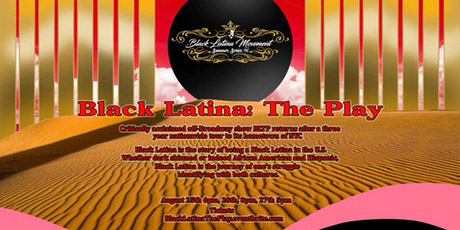
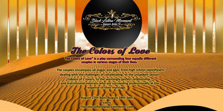
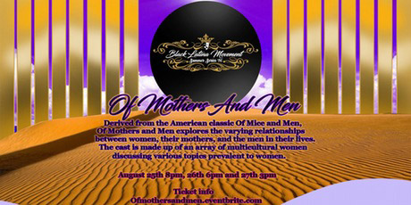
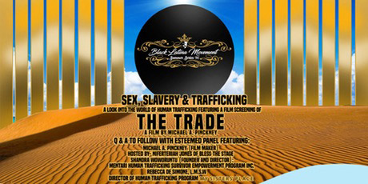

Black Latina Movement Summer Series ’16
showtimes & tickets:
August 23-28
Founded by the movement’s CEO/Founder Crystal Shaniece Roman and Managing Director Shirley Reyes, this week long festival features producing, directing, and writing (by way of theater productions and performances) along with a film screening poised at raising awareness on human trafficking. This festival is history in the making for the Black Latina Movement as this is the first time that they are producing all 3 of the company’s theater productions (Black Latina -The Play, The Colors of Love – Stage Play, and Of Mothers And Men – A New Play) simultaneously. Along with presenting their productions they will also dedicate one night of the festival to raising awareness on human trafficking with the Sex, Slavery & Trafficking event. This featured screening of The Trade (a film by Michael Pinckney) will be followed by a Q & A with an esteemed panel hosted by Niferteriah Jones.

Black Latina – The Play
Black Latina is the story of being a Black Latina in the U.S. Whether dark skinned or indeed African American and Hispanic, Black Latina is the journey of one’s struggle identifying with both cultures. It deals with both the external factors, from society to media, as well as the internal factors of family and friends viewpoints.

The Colors of Love – Stage Play
The Colors of Love is a play surrounding four equally different couples in various stages of their lives. Each pair of lovers is working through their relationship and attempting to find the true meaning of happiness, while achieving and maintaining a level of self gratification and satisfaction.

Of Mothers And Men – A New Play
Derived from the American classic Of Mice and Men, Of Mothers and Men explores the varying relationships between women, their mothers, and the men in their lives. This monologue driven piece (comprised of 9 vignettes) dives into the pivotal roles of two of the most influential people in one’s life.

The Trade Synopsis
The Trade follows the lives of an award winning Photo journalist, a young prostitute, a women’s crisis counselor, two vice cops, and a flamboyant pimp as their respective lives intersect and their destinies intertwine.
For more information and details on Summer Series ’16 please visit www.blacklatinamovement.com.
About Black Latina Movement
The Black Latina Movement strives in the advancement of the Black Latina voice. Whether sharing our experiences through music, theater, and/or film we continue to use these forums as a vehicle to showcase our talents. We dedicate the Movement to exhibiting the beauty and harmony of both African and Latino cultures and our ability to stand firmly united regardless of our geographical locations. We push to not only have our experiences heard but to also show the multitude of faces and realms that Black Latinas possess.